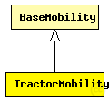

This documentation is released under the Creative Commons license
This documentation is released under the Creative Commons licenseMoves a tractor through a field with a certain amount of rows. Since the tractor also moves around the field, the tractor travels the number of rows PLUS one rows. Consider the following piece of ascii-art for rows=2.
>>>>>>>>>>>>>>>v ^ v ^ v <<<<<<<<<<<<<<<< v ^ v ^ >>>>>>>>>>>>>>>^
NOTE: Does not yet support 3-dimensional movement.
Author: Peterpaul Klein Haneveld
The following diagram shows usage relationships between types. Unresolved types are missing from the diagram. Click here to see the full picture.
The following diagram shows inheritance relationships for this type. Unresolved types are missing from the diagram. Click here to see the full picture.
| Name | Type | Description |
|---|---|---|
| BaseMobility | simple module |
Module which is responsible for mobility related information like position and movement BaseMobility itself defines a static mobility pattern (means only a position, no movement). Mobility modules which extend from this module will define more complex movement patterns. |
| Name | Type | Default value | Description |
|---|---|---|---|
| notAffectedByHostState | bool | true | |
| coreDebug | bool | false |
debug switch for the core framework |
| constraintAreaMinX | double | -1m/0 |
min x position of the constraint area, unconstrained by default (negative infinity) |
| constraintAreaMinY | double | -1m/0 |
min y position of the constraint area, unconstrained by default (negative infinity) |
| constraintAreaMinZ | double | -1m/0 |
min z position of the constraint area, unconstrained by default (negative infinity) |
| constraintAreaMaxX | double | 1m/0 |
max x position of the constraint area, unconstrained by default (positive infinity) |
| constraintAreaMaxY | double | 1m/0 |
max y position of the constraint area, unconstrained by default (positive infinity) |
| constraintAreaMaxZ | double | 1m/0 |
max z position of the constraint area, unconstrained by default (positive infinity) |
| initialX | double | uniform(constraintAreaMinX, constraintAreaMaxX) |
initial x coordinate of the nodes' position |
| initialY | double | uniform(constraintAreaMinY, constraintAreaMaxY) |
initial y coordinate of the nodes' position |
| initialZ | double | uniform(constraintAreaMinZ, constraintAreaMaxZ) |
initial z coordinate of the nodes' position |
| initFromDisplayString | bool | false |
initial position will be read from display string |
| debug | bool | false |
debug switch |
| x1 | double |
rectangle is denoted by the (x1,y1) and (x2,y2) coords [m] |
|
| y1 | double |
rectangle is denoted by the (x1,y1) and (x2,y2) coords [m] |
|
| x2 | double |
rectangle is denoted by the (x1,y1) and (x2,y2) coords [m] |
|
| y2 | double |
rectangle is denoted by the (x1,y1) and (x2,y2) coords [m] |
|
| rows | double |
the number of rows the field is divided in |
|
| speed | double |
speed of the host (in m/s) |
|
| updateInterval | double |
time interval to update the hosts position (in seconds) |
| Name | Value | Description |
|---|---|---|
| display | i=block/cogwheel | |
| class | TractorMobility |
// // Moves a tractor through a field with a certain amount of rows. // Since the tractor also moves around the field, the tractor travels // the number of rows PLUS one rows. Consider the following piece of // ascii-art for rows=2. // // >>>>>>>>>>>>>>>v // ^ v // ^ v // <<<<<<<<<<<<<<<< // v ^ // v ^ // >>>>>>>>>>>>>>>^ // // NOTE: Does not yet support 3-dimensional movement. // @author Peterpaul Klein Haneveld // simple TractorMobility extends BaseMobility { parameters: @class(TractorMobility); bool debug = default(false); // debug switch double x1 @unit(m); // rectangle is denoted by the (x1,y1) and (x2,y2) coords [m] double y1 @unit(m); // rectangle is denoted by the (x1,y1) and (x2,y2) coords [m] double x2 @unit(m); // rectangle is denoted by the (x1,y1) and (x2,y2) coords [m] double y2 @unit(m); // rectangle is denoted by the (x1,y1) and (x2,y2) coords [m] double rows; // the number of rows the field is divided in double speed @unit(mps); // speed of the host (in m/s) double updateInterval @unit(s); // time interval to update the hosts position (in seconds) }
This documentation is released under the Creative Commons license